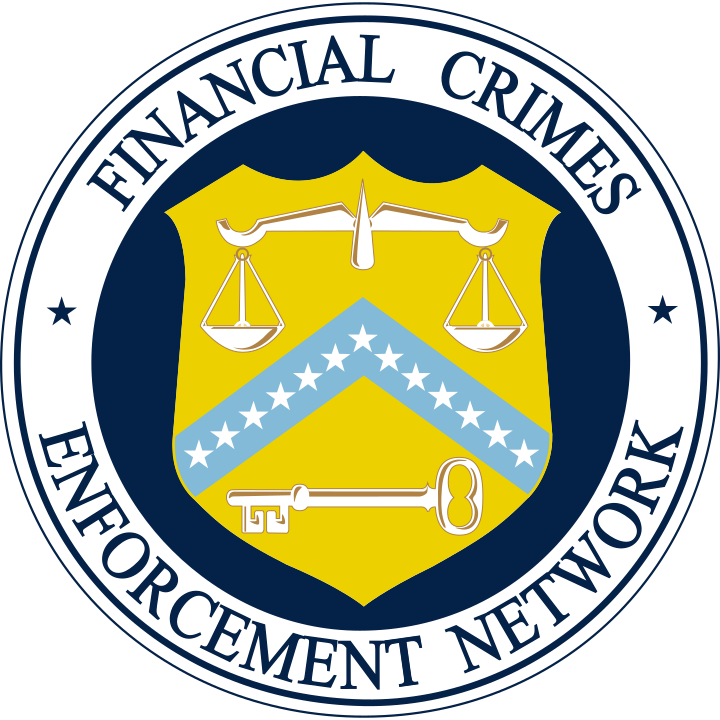

<div class="container-4">
  <div class="container">
    
    <p class="legal-text">
      Devslopes is operating as a Money Services Business (MSB) in the United States of America through FinCEN.
      Devslopes CA LLC must register as an MSB with FinCEN within 180 days from the launch of this token sale (05/28/18).
    </p>
    <p class="legal-text">
      Because the Cache cryptocurrency is in current circulation, operating in production, and being used by one or
      more institutions, your purchase of the Cache token is legally considered a currency exchange. Though words such
      as ICO and token sale might be used by the community and/or participants of this campaign, there are no
      securities being issued by Devslopes CA LLC.
    </p>
    <p class="legal-text">
      Devslopes CA LLC promises no capital gains, dividends, or profits by virtue of purchasing a Cache token. The
      Cache token is a cryptocurrency that you are purchasing/exchanging with another form of currency at various
      exchange rates.
    </p>
    <p class="legal-text">
      In an attempt to be as transparent as possible, Devslopes CA LLC uses words such as funding and goals to
      demonstrate how revenue earned from this token sale promotion will be used.
    </p>
  </div>
</div>
